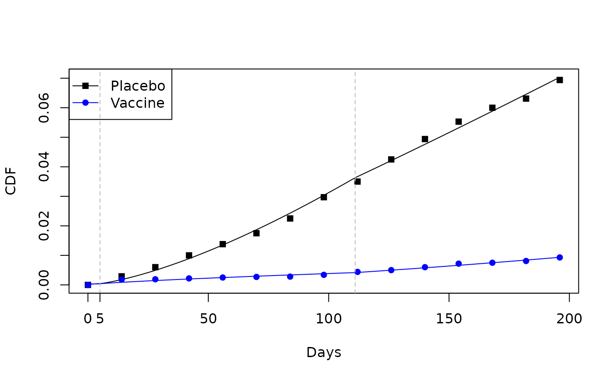

Weibull-Weibull-Positive Stable
alpha.Rmd
library(mpw)
## This data resembles that in Thomas et al
time<- c(0,14,28,42,56,70,84,98,112,126,140,154,168,182,196)
F1 <- c(0,.18,.19,.22,.25,.27,.28,.34,.44,.50,.60,.72,.75,.81,.93)/100
F0 <- c(0,.29,.60,1,1.38,1.75,2.25,2.97,3.50,4.25,4.94,5.53,6.00,6.31,6.94)/100
## plot the data points,
## with interpolated lines
plot (time, F0, type="l", col="black", xlab="Days", ylab="CDF")
points(time, F0, col="black", pch=15)
lines (time, F1, col="blue")
points(time, F1, col="blue", pch=16)
legend("topleft", c("Placebo", "Vaccine"),
col=c("black","blue"),
lty=1,
pch=c(15,16)
)Set the h_parm and frailty distribution for
this example.
H_PARM <- 0.72
FRAILTY <- "PS"Sixteen knots
tvec.in <- c(7, seq(14,max(time)-14,length.out=14),max(time)-7)
tvec.in
#> [1] 7.00000 14.00000 26.92308 39.84615 52.76923 65.69231 78.61538
#> [8] 91.53846 104.46154 117.38462 130.30769 143.23077 156.15385 169.07692
#> [15] 182.00000 189.00000Two step fitting procedure
1. Fit for placebo group
fit_F_alpha <- function(x){mean((popavg_dist(time,
knots= tvec.in,
logk0=x[1],
g0=x[2],
delta_vec=x[-c(1,2)],
h_parm = H_PARM,
frailty=FRAILTY) - F0)^2) }
init.vals <- c(log(2.4), -10, rep( 0,length(tvec.in)))
plac_fit_F_alpha <-
optim(init.vals, fit_F_alpha,
method="Nelder-Mead",
control=list(maxit=1e8))
print(plac_fit_F_alpha)
#> $par
#> [1] -0.15799938 -10.12040145 -0.21508909 0.74768428 0.21589618
#> [6] 0.03136962 -0.15528469 0.27388947 0.35359469 0.20431276
#> [11] -0.03848921 -0.39518830 0.11877485 -0.05979150 -0.91393283
#> [16] -0.27749430 0.54807831 1.84013113
#>
#> $value
#> [1] 1.831274e-07
#>
#> $counts
#> function gradient
#> 1239 NA
#>
#> $convergence
#> [1] 0
#>
#> $message
#> NULL
logk0p = plac_fit_F_alpha$par[1]
g0p = plac_fit_F_alpha$par[2]
delta_vec_p =plac_fit_F_alpha$par[-1*c(1,2)]2. Fit for vaccine group
Now take logk0p and g0p, the parameters
that control the first (leftmost) piece for the placebo group and use
them for logk0v and g0v when estimating the
pieces for the vaccine group. This forces the first pieces to be the
same for both groups (i.e. ramp-up time).
fit_F_alpha <- function(x){mean((popavg_dist(time,
knots= tvec.in,
logk0=logk0p,
g0=g0p,
delta_vec=x,
h_parm = H_PARM,
frailty=FRAILTY) - F1)^2) }
init.vals <- rep( 0,length(tvec.in))
vacc_fit_F_alpha <-
optim(init.vals, fit_F_alpha,
method="Nelder-Mead",
control=list(maxit=1e8))
print(vacc_fit_F_alpha)
#> $par
#> [1] -8.538501e-01 1.412733e-07 3.512281e-08 4.482365e-01 7.181797e-02
#> [6] 6.486320e-01 4.269952e-01 -1.855307e-01 1.929620e-02 2.049996e-01
#> [11] 2.439450e-01 8.880881e-02 -2.597165e-01 1.558628e-01 -7.205915e-01
#> [16] -4.719281e-01
#>
#> $value
#> [1] 1.054605e-07
#>
#> $counts
#> function gradient
#> 3209 NA
#>
#> $convergence
#> [1] 0
#>
#> $message
#> NULL
logk0v = logk0p
g0v = g0p
delta_vec_v =vacc_fit_F_alpha$parPlot population avg CDF
- Quick check of fit
We use the knots and the original time in time.dist to
do a quick check of the fit. We put vertical dashed lines in the plot to
denote knot placement.
time.dist <- sort(c(time, tvec.in))
plac.dist <- popavg_dist( x = time.dist,
knots = tvec.in,
logk0 = logk0p,
g0 = g0p,
delta_vec = delta_vec_p,
h_parm = H_PARM,
frailty = FRAILTY)
vacc.dist <- popavg_dist( x = time.dist,
knots = tvec.in,
logk0 = logk0v,
g0 = g0v,
delta_vec = delta_vec_v,
h_parm = H_PARM,
frailty = FRAILTY)
plot (time.dist, plac.dist, type="l", col="black", xlab="Days", ylab="CDF")
points(time , F0 , col="black", pch=15)
lines (time.dist, vacc.dist, col="blue")
points(time , F1, col="blue", pch=16)
abline(v=tvec.in, lty=2, col="grey")
legend("topleft", c("Placebo", "Vaccine"),
col=c("black","blue"),
lty=1,
pch=c(15,16)
)